Cafe Expresso
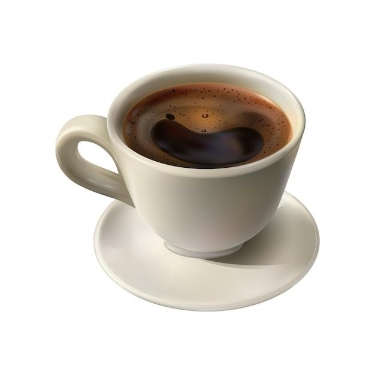
Precio: 35
Tipo de café negro fuerte que se forma cuando el agua caliente pasa a mucha presión través de los granos de café molidos
Cafe Cortadito
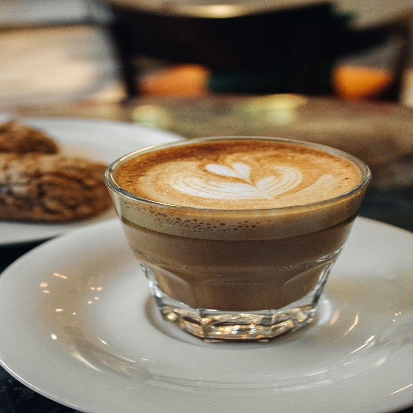
Precio: 50
El término cortado se refiere a la forma en que leche “corta” la intensidad del espresso, atenuando su acidez mientras mantiene el sabor del café
Cafe Bombom
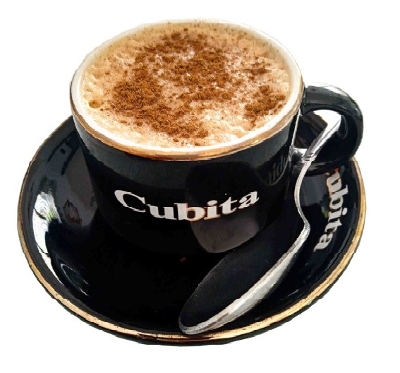
Precio: 60
El Café Bombón es una exquisita preparación que se elabora con Café Espresso, y leche condensada. Como es de esperar su sabor es muy dulce
Cafe Ruso
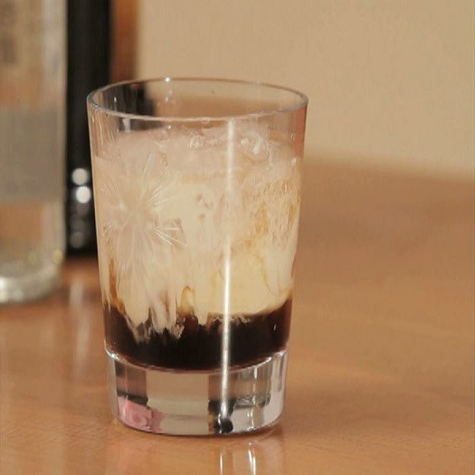
Precio: 70
El café ruso es una bebida caliente que se prepara mezclando café expreso, vodka y azúcar, y a veces se le agrega crema batida por encima. Tiene un sabor fuerte y un poco amargo, con un toque de dulzura del azúcar
Cafe Negro
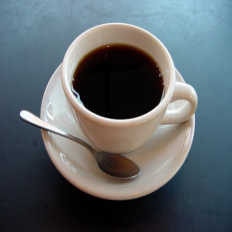
Precio: 80
Expresión que indica el café fluido que se usa como bebida, endulzado o amargo; pero sin adición de leche, crema u otro ingrediente.
Cafe Capuchino
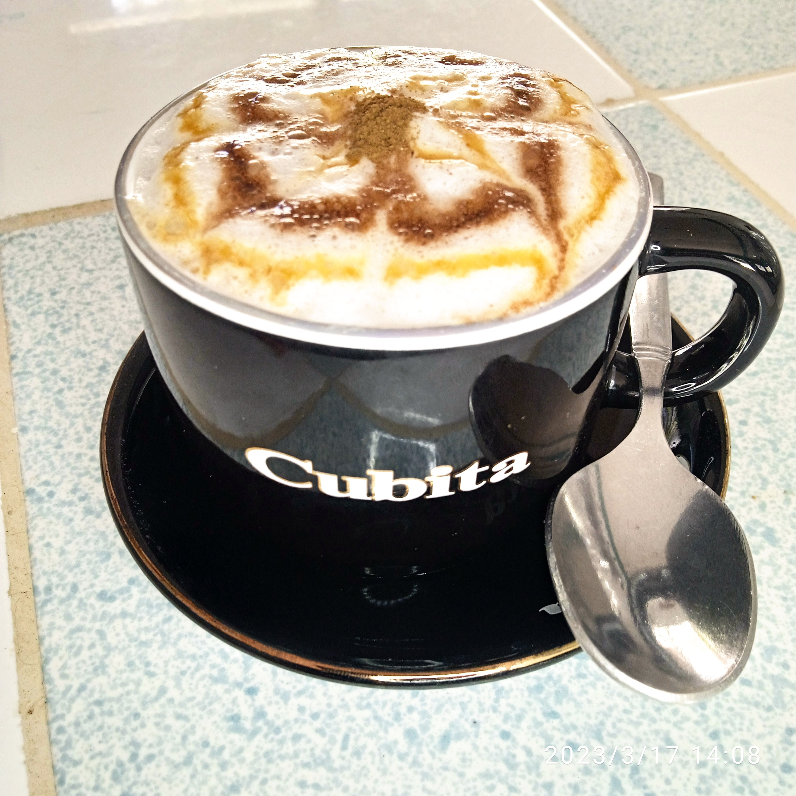
Precio: 80
El cappuccino es una combinación de café solo con una gruesa capa de leche vaporizada y espumada encima, casi como si el café llevara una capucha de leche
Cafe Moca
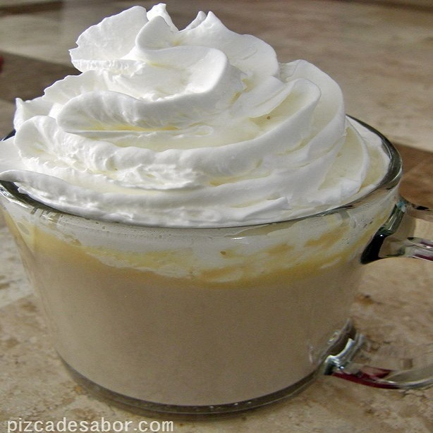
Precio: 80
Un café moca es una variante del café con leche. Como este, suele llevar un tercio de expreso y dos tercios de leche vaporizada, pero se añade una parte de chocolate, normalmente en forma de jarabe de chocolate, aunque algunas máquinas usan chocolate en polvo instantáneo.
Gelatina
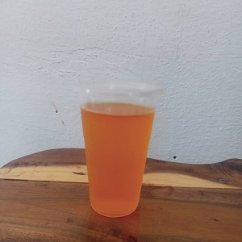
Precio: 40
La gelatina es una buena fuente de proteínas, vitaminas y minerales, por lo que es un postre saludable
Tres Gracias

Precio: 40
Excelente combinacion de tres bolas de helado, perfectas para un gran dia agotador
Ensalada
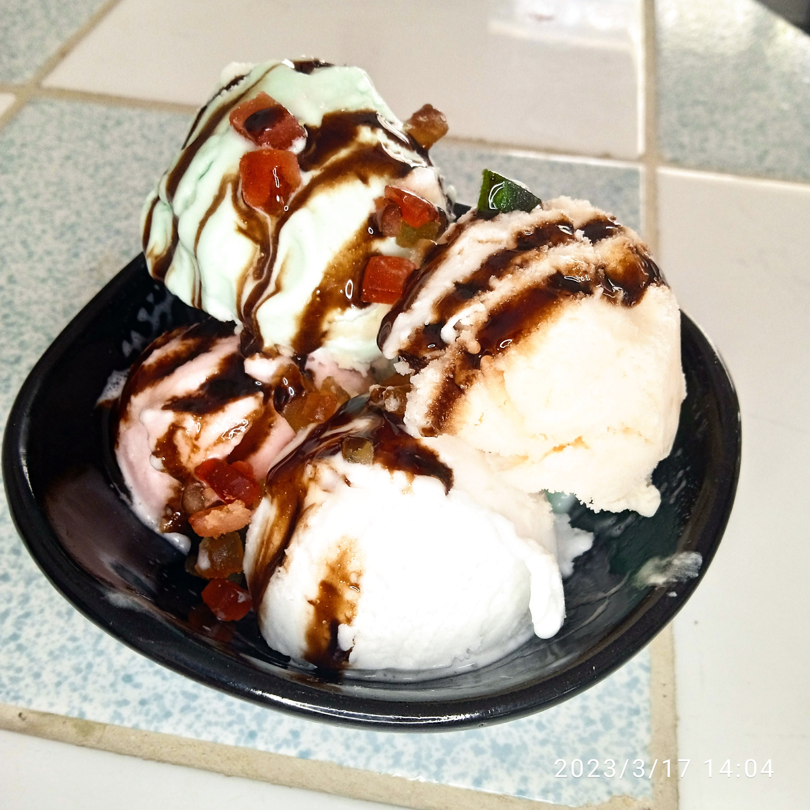
Precio: 100
5 Bolas de helado al plato, lo mismo para consumo individual, que con pareja o amistades
Pan c/ Hamburguesa
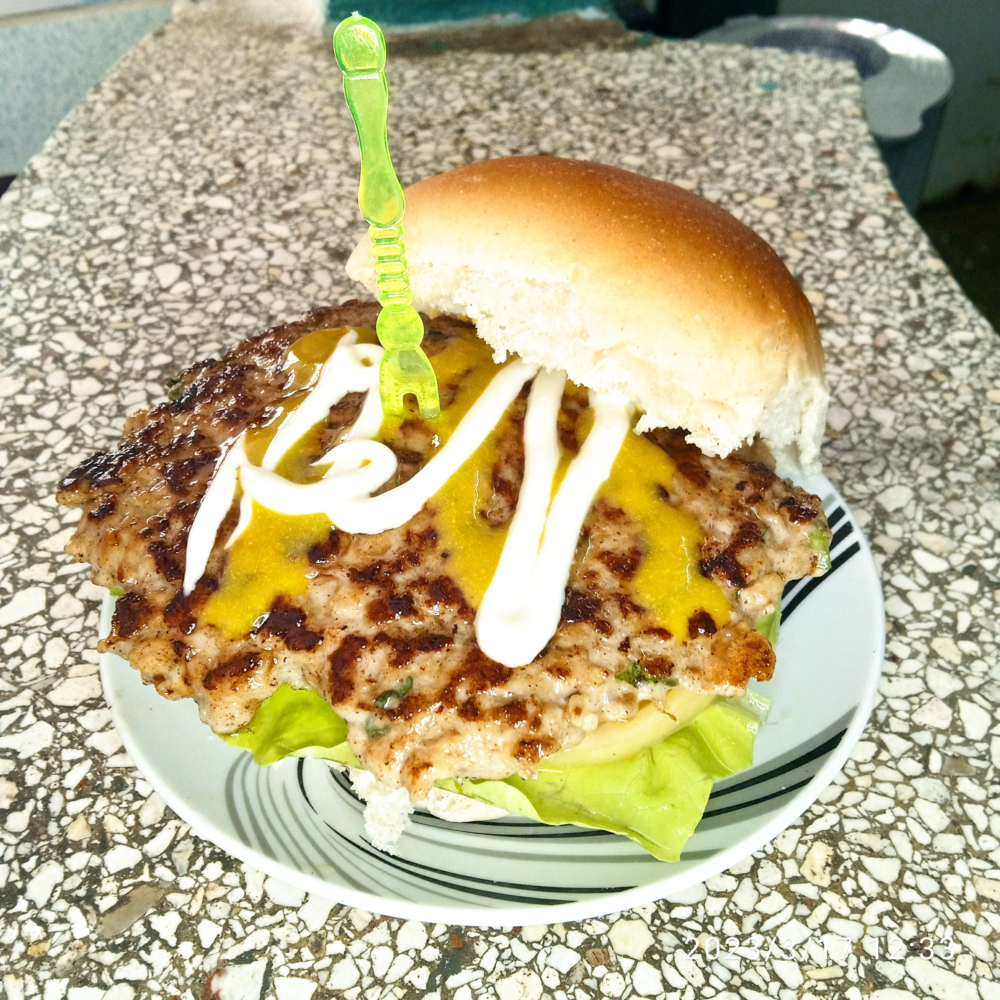
Precio: 100
Tortita de carne picada aglutinada en forma de filete, cocinada a la parrilla o a la plancha, aunque también puede freírse u hornearse
Pan c/ Mayonesa
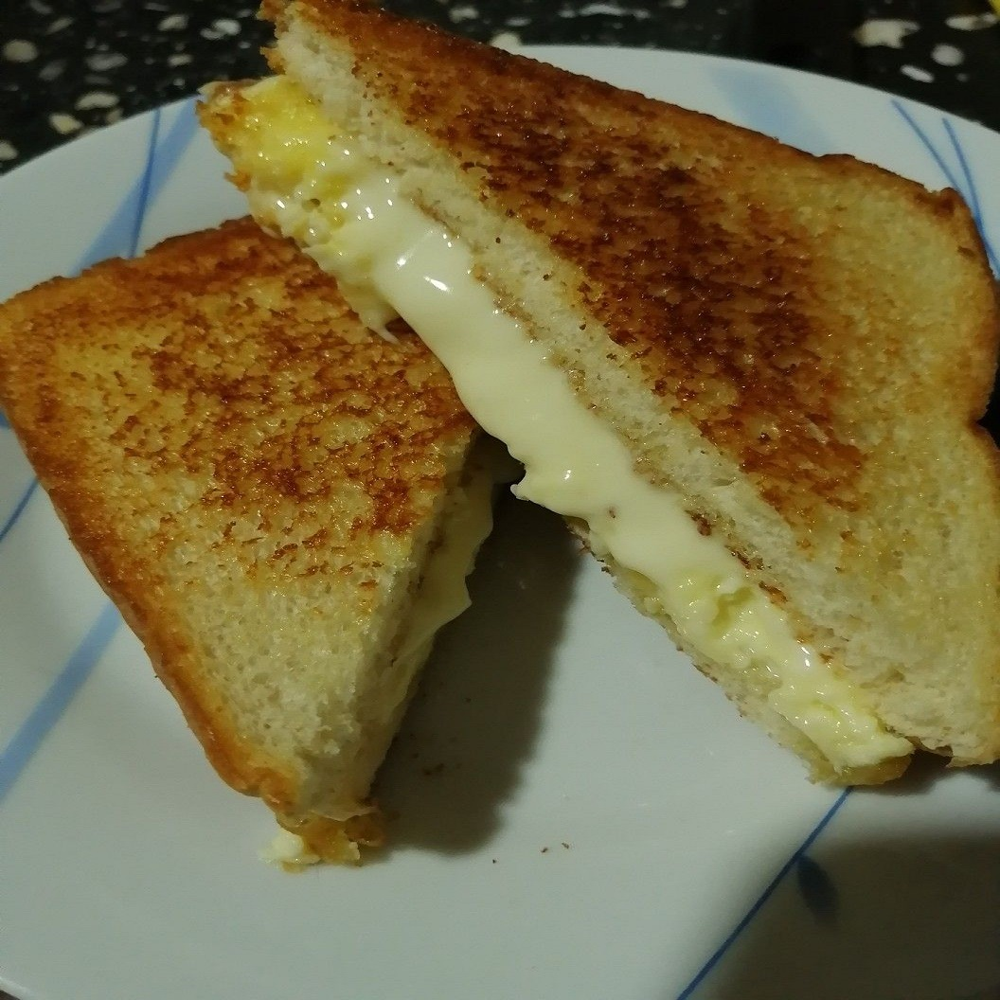
Precio: 35
El pan de mayonesa es simplemente un pan hecho con mayonesa. Es suave y esponjoso, y tiene un suave sabor a mayonesa. Puede sonar raro, pero te prometo que está delicioso
Pan c/ Jamonada
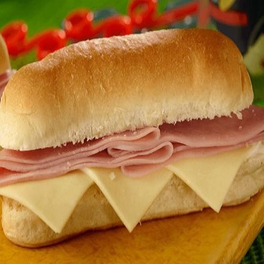
Precio: 50
Es un snack que aporta proteínas de calidad, energía en forma de hidratos de carbono y grasas, además de vitaminas y minerales necesarios para el buen funcionamiento del organismo. Es un buen ejemplo de comida informal sana y nutritiva